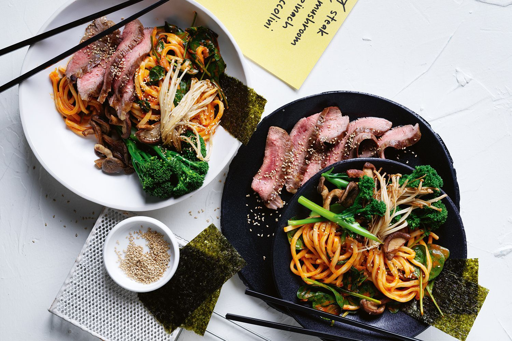

Green tea noodles bring a pop of colour to this easy midweek dinner.

Move over 2-minute noodles, this beef and udon dish will make your evening.

A luscious, tangy stir-fry that makes two generous portions for very few calories.